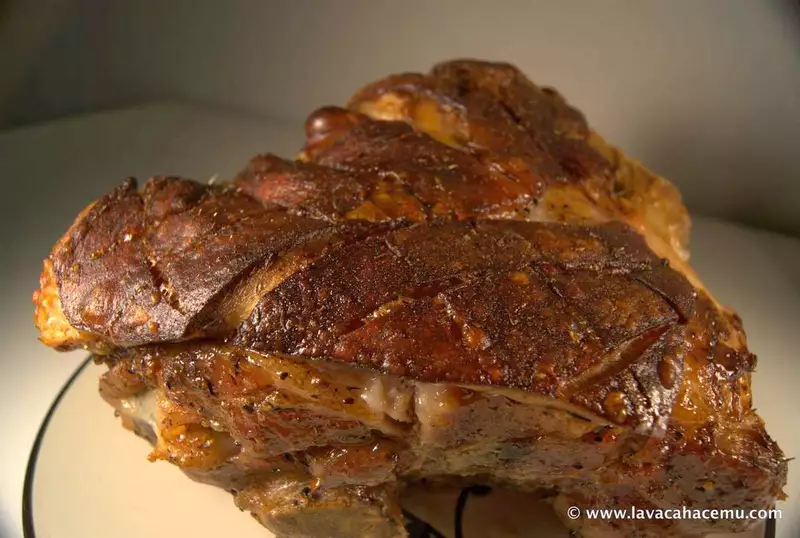

Picnic Roast [recipes]
2013-11-03

I’m sharing this recipe so maybe you’ll have a chance to make it in time for new year’s… This was my first attempt at a pork roast in a few years, previously I had only done loins and, well, those are pretty easy and quite similar to any roast of beef. Given that usually pork roasts come out a bit dry, I went with a brine bath before roasting in the oven, I read a few recipes online for doing this type of roast in a slow cooker, an oven and even in a pot, but there’s nothing like roasting in an oven; and for Christmas with the no-poulty-eating wife, well, it was a perfect fit.
Why brining you may ask? well, the salt in the brine super-saturates the meat’s cells with moisture and when you cook it, more of that moisture will remain, giving you a better chance of not over-cooking and drying out your roast.
Now, about that recipe…
Ingredients
- 1 ~8 lb picnic roast or similar cut
For the brine
- 3 quarts water
- 1/2 cup kosher salt (coarse grain)
- 1/3 cup granulated sugar
- 1 1/2 teaspoon thyme
- 5 bay leaves
- 7 whole cloves
- 1 1/2 tsp anise seed
- 1 1/2 tsp black peppercorns
- 1 1/2 tsp coriander seed
- 1/2 tsp allspice
For the tanning lotion
- 2 tbsp olive oil
- 1 tbsp canola oil
- 1/2 tsp salt
- 1 tsp thyme
- 1 tsp paprika
Procedure
- Toast the peppercorns, cloves, coriander and anise seeds until fragrant.
- Crush toasted spices in a mortar and pestle.
- Bring water to a boil, add and combine all of the ingredients for the brine.
- Simmer brining solution for 15 minutes.
- Once cooled, put roast in a large enough container and pour over the brining solution.
- Let the cut sit un the brining solution for 12 to 18 hours, this one got a 14 hour bath.
- Preheat your oven to 425°F.
- Remove the roast from the brining solution, put on a rack that fits inside a roasting pan and pat dry.
- If your piece ‘o meat has skin, you can cut a cross-hatch pattern into it for added looks and easier skin-cutting at the table.
- Paint on the tanning lotion for an even coating.
- Place the roast-to-be in the preheated oven for 15 to 20 minutes so it’ll start crisping up.
- Reduce the heat to 350°F and leave it in there for another 4 hours or if you have one of those fancy shmancy thermometer thingies, until the internal temperature reches 150~155°F.
- Remove from oven and let it rest at least 20 minutes because if you cut into it, not only will you loose all of those juices you went to such trouble to keep in the meat, it’ll probably spit boiling pork lard at you when you hit a pocket of the stuff.
{kind=link}
{kind=link}